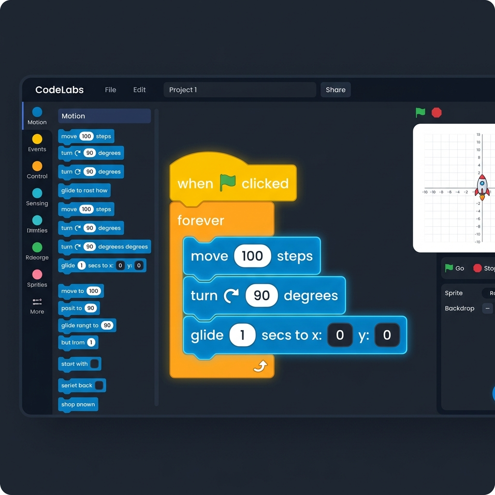

Python Code Lab 4.1
Python Code Lab 4.1 lets you load, edit, run, display, and trace Python code in the browser.
It is designed for teachers who want to demonstrate algorithms clearly and for students who want to explore
code step by step.
Getting started
When the page opens, you can:
- Paste a raw Python file URL and click Load Code.
- Click Upload .py to load a local Python or text file.
- Choose one of the ready-made iGCSE algorithm examples.
- Click Blank File to write your own code.
- Click Use Blocks to start a visual Blocks program.
Ready-made examples
The built-in examples cover common iGCSE algorithm patterns:
- Average, counting, and totalling
- Linear search and bubble sort
- If/else selection
- For loops, while loops, and repeat-style loops
Loading code from a URL
To load code from another source:
- Copy the raw URL of a Python file.
- Paste it into the input box.
- Click Load Code.
The page URL updates automatically, so you can share the loaded version with students.
Example format:
https://jamesabela.github.io/jsfun/pythoncopy?url=RAW_FILE_URL_HERE

Making a GitHub Gist
If you do not already have a raw Python file online, GitHub Gist is a simple way to host one.
- Go to gist.github.com.
- Create a new Gist and name the file with a
.py ending.
- Type or paste your Python code.
Getting the raw Gist URL
- Click Create secret gist or Create public gist.
- Click the Raw button above the code.
- Copy the URL from your browser's address bar.
The URL should start with https://gist.githubusercontent.com/.
Paste this URL into Python Code Lab to load your code.

Edit Mode
Edit Mode is the normal working mode. You can:
- Write, paste, or load Python code in the text editor.
- Click Run to run the code.
- Use the console window for output and
input() prompts.
- Press Reset to clear output or cancel execution.

Blocks Mode
Blocks Mode is designed for students coming from Scratch. It provides a visual block interface that generates
standard Python code.
- Click Use Blocks to open a blank Blocks file.
- Start with a yellow
when clicked hat block.
- Drag and snap statements underneath it.
Blocks: control and drawing
- Use Scratch-like control loops such as
forever, which compiles to while True:.
- Use
wait X seconds, which compiles to time.sleep(X).
- Draw using blue motion blocks such as
move 100 steps.
- Use green pen blocks such as
pen down.
Blocks: input and running
- Use
input Enter value for text input.
- Use
input number Enter number for numeric input.
- Use
join to combine text, values, and variables.
- Click the floating Run button to compile and run while staying in Blocks Mode.
Blocks workspace controls
- Output and input prompts appear in the run panel on the right.
- Collapse or reopen the run panel using the side arrow.
- The Blocks workspace resizes to fit the available space.
- Click Back to Text Mode to send generated Python back to the text editor.

Display Mode
Display Mode lets you visually trace Python code line by line.
When you switch to Display Mode, the editor becomes read-only and the program is analysed to prepare for
tracing.
It is useful for teachers explaining code to students on a projector or shared screen.
Display Mode features
- Line-by-line highlighting
- Step-by-step execution
- Automatic play mode
- Variable tracking
- Call stack tracing

Visual tracing interface
As you step through code, the current active line is highlighted. The panels on the right show:
- Call Trace: the stack of active functions.
- Variables: all variables in scope and their current values.
- Output: the program's standard output.
Quick reference
| Control |
Purpose |
| Play / Pause |
Automatically step through the code |
| Step |
Execute the next line of code |
| Back |
Move back one step of execution |
| Reset |
Reset tracing to the beginning |
| Full Screen |
Show the tool full screen for teaching |
Teacher use cases
Teachers can use Python Code Lab 4.1 to:
- Demonstrate standard algorithms
- Explain code line by line
- Show how variables change
- Teach loops, selection, functions, and recursion
- Create code-ordering puzzles and share examples by URL
Student use cases
Students can use Python Code Lab 4.1 to:
- Experiment with Python code in the browser
- Run short programs
- Trace algorithms step by step
- Check how variables change
- Copy or download working examples
Supported modules
The following standard Python modules are available in the browser environment:
random, math, and statisticsdatetime, string, and timeturtle
Programs that require other imports, external files, or complex packages should be downloaded and run locally.
Turtle Graphics & Turtle Mode
Python Code Lab 4.1 supports in-browser Turtle graphics.
When your code imports turtle, or when you switch to Turtle Mode, a canvas appears
on the right side of the editor.
Turtle movement
Supported movement commands include:
forward(), backward(), left(), and right()goto() and home()- Exact mathematical
circle(radius, extent) drawings
Turtle pen and shapes
- Use
penup(), pendown(), pensize(), and width().
- Set colours with
pencolor() and fillcolor().
- Use
begin_fill() and end_fill() to fill shapes.
- Change cursor shape with
shape("turtle"), shape("circle"),
shape("square"), or shape("classic").
Turtle screen and tracing
- Use
bgcolor() to set the canvas background.
done(), mainloop(), and exitonclick() are supported as no-op functions.- Switch to Display Mode to trace turtle scripts line by line.
- The canvas stores a snapshot at every execution line.
Exporting turtle drawings
Click the Save Image button in the turtle graphics panel header to export the canvas drawing.
The exported file is downloaded as a high-quality .png image.
Reference Links
Python Code Lab 4.1 automatically scans Python code for web links written in comments or strings.
A Reference Links panel appears in the right column listing all URLs found in the code.
- Click a line badge such as
Ln 12 to jump to that line.
- Click Open to view the link in a new browser tab.
Web previews
- Click Preview next to a link to display it inside Python Code Lab.
- Use the Preview: On toggle to show or hide the preview window.
- YouTube videos and Shorts links are automatically translated to embed links.
Coding Quizzes & Course Progression
Python Code Lab 4.1 supports custom coding quizzes and multi-file course progression using comments.
Students can test algorithms and move through structured lessons instantly.
Test case comment format
Add comments to your Python code using this structure:
#Input
# 5, 10
# 3, 2
#output
# 15
# 5
#Next
# https://jamesabela.github.io/jsfun/pythoncopy?url=...level2.py
Quiz comment keywords
#Input: rows of comma-separated inputs, one row per test case.#output: rows of expected outputs, one row per test case.#Next: the URL of the next level.#End: the course title for the final level.
Running the tests
When the editor detects #Input and #output comments, a purple
Run Tests (N) button appears next to Run.
Clicking it runs all tests in Pyodide, compares outputs, and displays a dashboard summary with expandable
details for each run.
Finishing a course
When all tests pass, the Next Level button is unlocked to load the next file.
On the final level, #End displays a completion card and unlocks a customizable Canvas completion
certificate as a PNG download.